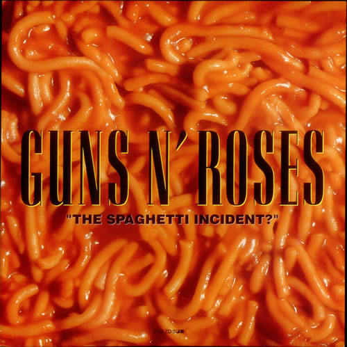

Spaghetti Incident?
"The Spaghetti Incident?" is the fifth studio album by the American hard rock band Guns N' Roses. The album is composed of covers of older punk rock and hard rock songs. "The Spaghetti Incident?" is the only studio album to feature rhythm guitarist Gilby Clarke, who replaced original Guns N' Roses member Izzy Stradlin during the band's Use Your Illusion tour in 1991, as well as the last album to feature guitarist Slash, bassist Duff McKagan and drummer Matt Sorum. It is also the only Guns N' Roses album not to be accompanied by a supporting tour.